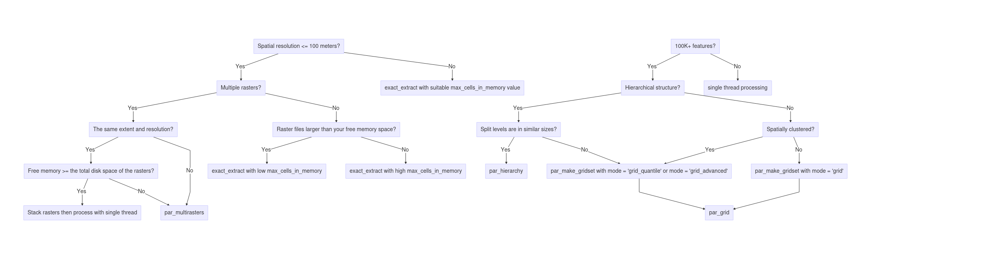
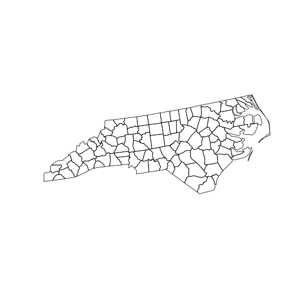
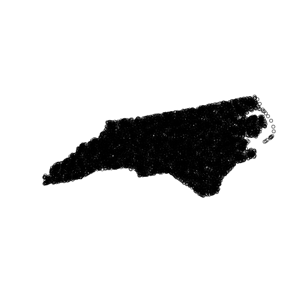
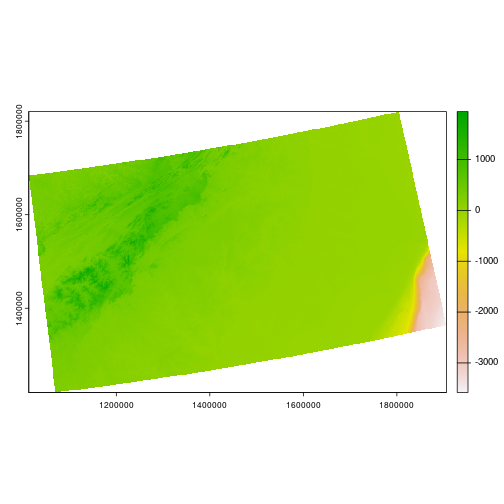
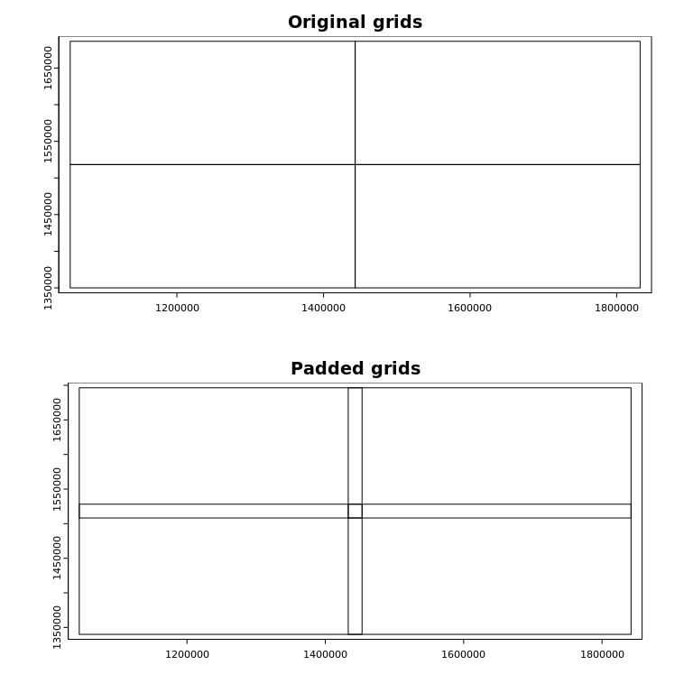
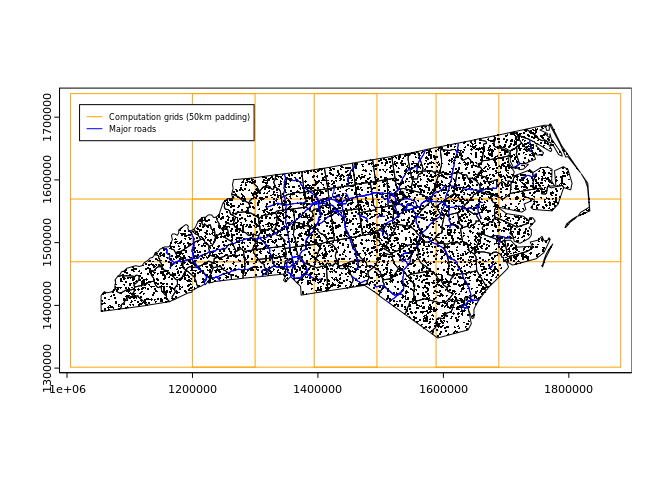

Objective and target users
Objective
- This package automates parallelization in spatial operations with
chopinfunctions as well as sf/terra functions. With GDAL-compatible files and database tables,chopinfunctions help to calculate spatial variables from vector and raster data with no external software requirements.
For whom chopin is useful
- Following user groups will find this package useful to accelerate the covariate calculation process for further analysis and modeling:
- Environmental health researchers and data analysts
- Health geographers and spatial epidemiologists
- Spatial analysts who need to perform geospatial operations with large datasets
- We assume that users–
- Can run R functions following relevant instructions;
- Have basic knowledge of geographic information system data models, coordinate systems and transformations, spatial operations, and raster-vector overlay;
- Understood and planned what they want to calculate; and
- Collected datasets they need
Notes on data restrictions
- This package works best with two-dimensional (planar) geometries. Users should disable
s2spherical geometry mode insfby setting. Running anychopinfunctions at spherical or three-dimensional (e.g., including M/Z dimensions) geometries may produce incorrect or unexpected results.
sf::sf_use_s2(FALSE)Basic design
- Processing functions accept sf/terra’s classes for spatial data. Raster-vector overlay is done with
exactextractr. - From version 0.3.0, this package supports three basic functions that are readily parallelized over multithread environments:
-
extract_at: extract raster values with point buffers or polygons.-
extract_at_buffer: extract raster values at circular buffers; kernel weight can be applied extract_at_poly
-
-
summarize_sedc: calculate sums of exponentially decaying contributions -
summarize_aw: area-weighted covariates based on target and reference polygons
-
- When processing points/polygons in parallel, the entire study area will be divided into partly overlapped grids or processed through its own hierarchy. We suggest two flowcharts to help which function to use for parallel processing below. The upper flowchart is raster-oriented and the lower one is vector-oriented. They are separated but supplementary to each other. When a user follows the raster-oriented one, they might visit the vector-oriented flowchart at each end of the raster-oriented flowchart.
-
par_grid: parallelize over artificial grid polygons that are generated from the maximum extent of inputs.par_make_gridsetis used to generate the grid polygons before running this function. -
par_hierarchy: parallelize over hierarchy coded in identifier fields (for example, census blocks in each county in the US) -
par_multirasters: parallelize over multiple raster files
-
- These functions are designed to be used with
futureanddoFuturepackages to parallelize over multiple CPU threads. Users can choose the number of threads to be used in the parallelization process. Users always need to register parallel workers withfutureanddoFuturebefore running the three functions above.
doFuture::registerDoFuture()
future::plan(future::multicore, workers = 4L)
# future::multisession, future::cluster are available,
# See future.batchtools and future.callr for other options
# the number of workers are up to users' choice
To run the examples
- RStudio: download and open this document then press “Run All Chunks Above”, “Run All Chunks Below”, or “Restart R and Run All Chunks”, whichever is appropriate.
- Visual Studio Code (with R extension): download and open this document then press “Run Above” at the last code chunk.
- If you prefer command line (i.e., in Unix-like operating systems), run:
git clone https://github.com/Spatiotemporal-Exposures-and-Toxicology/chopin
cd chopin
Rscript -e \
"
knitr::purl(\"README.Rmd\", \"README_run.r\")
source(\"README_run.r\")
"Installation
-
chopincan be installed usingremotes::install_github(also possible withpak::pakordevtools::install_github).
# install.packages("remotes")
remotes::install_github("Spatiotemporal-Exposures-and-Toxicology/chopin")Examples
- Examples will navigate
par_grid,par_hierarchy, andpar_multirastersfunctions inchopinto parallelize geospatial operations.
# check and install packages to run examples
pkgs <- c("chopin", "dplyr", "sf", "terra",
"future", "future.apply", "doFuture", "testthat")
# install packages if anything is unavailable
rlang::check_installed(pkgs)
# disable spherical geometries
# it does the same as sf::sf_use_s2(FALSE)
options(sf_use_s2 = FALSE)
# parallelization-safe random number generator
set.seed(2024, kind = "L'Ecuyer-CMRG")
par_grid: parallelize over artificial grid polygons
- Please refer to a small example below for extracting mean altitude values at circular point buffers and census tracts in North Carolina.
- Before running code chunks below, set the cloned
chopinrepository as your working directory withsetwd()
ncpoly <- system.file("shape/nc.shp", package = "sf")
ncsf <- sf::read_sf(ncpoly)
ncsf <- sf::st_transform(ncsf, "EPSG:5070")
plot(sf::st_geometry(ncsf))
Generate random points in NC
- Ten thousands random point locations were generated inside the counties of North Carolina.
ncpoints <- sf::st_sample(ncsf, 1e4)
ncpoints <- sf::st_as_sf(ncpoints)
ncpoints$pid <- sprintf("PID-%05d", seq(1, 1e4))
plot(sf::st_geometry(ncpoints))
Target raster dataset: Shuttle Radar Topography Mission
- We use an elevation dataset with and a moderate spatial resolution (approximately 400 meters or 0.25 miles).
# data preparation
wdir <- system.file("extdata", package = "chopin")
path_srtm <- file.path(wdir, "nc_srtm15_otm.rds")
# terra SpatRaster objects are wrapped when exported to rds file
srtm <- terra::unwrap(readRDS(path_srtm))
terra::crs(srtm) <- "EPSG:5070"
srtm
#> class : SpatRaster
#> dimensions : 1534, 2281, 1 (nrow, ncol, nlyr)
#> resolution : 391.5026, 391.5026 (x, y)
#> extent : 1012872, 1905890, 1219961, 1820526 (xmin, xmax, ymin, ymax)
#> coord. ref. : NAD83 / Conus Albers (EPSG:5070)
#> source(s) : memory
#> name : file928c3830468b
#> min value : -3589.291
#> max value : 1946.400
terra::plot(srtm)
ncpoints_tr <- terra::vect(ncpoints)
system.time(
ncpoints_srtm <-
chopin::extract_at(
vector = ncpoints_tr,
raster = srtm,
id = "pid",
mode = "buffer",
radius = 1e4L # 10,000 meters (10 km)
)
)
#> user system elapsed
#> 9.431 0.165 9.632Generate regular grid computational regions
-
chopin::par_make_gridsettakes a spatial dataset to generate regular grid polygons withnxandnyarguments with padding. Users will have both overlapping (by the degree ofradius) and non-overlapping grids, both of which will be utilized to split locations and target datasets into sub-datasets for efficient processing.
compregions <-
chopin::par_make_gridset(
ncpoints_tr,
mode = "grid",
nx = 8L,
ny = 5L,
padding = 1e4L
)-
compregionsis a list object with two elements namedoriginal(non-overlapping grid polygons) andpadded(overlapping bypadding). The figures below illustrate the grid polygons with and without overlaps.
names(compregions)
#> [1] "original" "padded"
oldpar <- par()
par(mfrow = c(2, 1))
terra::plot(compregions$original, main = "Original grids")
terra::plot(compregions$padded, main = "Padded grids")
Parallel processing
- Using the grid polygons, we distribute the task of averaging elevations at 10,000 circular buffer polygons, which are generated from the random locations, with 10 kilometers radius by
chopin::par_grid. - Users always need to register multiple CPU threads (logical cores) for parallelization.
-
chopin::par_*functions are flexible in terms of supporting generic spatial operations insfandterra, especially where two datasets are involved.- Users can inject generic functions’ arguments (parameters) by writing them in the ellipsis (
...) arguments, as demonstrated below:
- Users can inject generic functions’ arguments (parameters) by writing them in the ellipsis (
future::plan(future::multicore, workers = 4L)
doFuture::registerDoFuture()
system.time(
ncpoints_srtm_mthr <-
chopin::par_grid(
grids = compregions,
grid_target_id = NULL,
fun_dist = chopin::extract_at,
vector = ncpoints_tr,
raster = srtm,
id = "pid",
mode = "buffer",
radius = 1e4L
)
)
#> Your input function was successfully run at CGRIDID: 1
#> Your input function was successfully run at CGRIDID: 2
#> Your input function was successfully run at CGRIDID: 3
#> Your input function was successfully run at CGRIDID: 4
#> Your input function was successfully run at CGRIDID: 5
#> Your input function was successfully run at CGRIDID: 6
#> Your input function was successfully run at CGRIDID: 7
#> Your input function was successfully run at CGRIDID: 8
#> Your input function was successfully run at CGRIDID: 9
#> Your input function was successfully run at CGRIDID: 10
#> Your input function was successfully run at CGRIDID: 11
#> Your input function was successfully run at CGRIDID: 12
#> Your input function was successfully run at CGRIDID: 13
#> Your input function was successfully run at CGRIDID: 14
#> Your input function was successfully run at CGRIDID: 15
#> Your input function was successfully run at CGRIDID: 16
#> Your input function was successfully run at CGRIDID: 17
#> Your input function was successfully run at CGRIDID: 18
#> Your input function was successfully run at CGRIDID: 19
#> Your input function was successfully run at CGRIDID: 20
#> Your input function was successfully run at CGRIDID: 21
#> Your input function was successfully run at CGRIDID: 22
#> Your input function was successfully run at CGRIDID: 23
#> Your input function was successfully run at CGRIDID: 24
#> Your input function was successfully run at CGRIDID: 25
#> Your input function was successfully run at CGRIDID: 26
#> Your input function was successfully run at CGRIDID: 27
#> Your input function was successfully run at CGRIDID: 28
#> Your input function was successfully run at CGRIDID: 29
#> Your input function was successfully run at CGRIDID: 30
#> Your input function was successfully run at CGRIDID: 31
#> Your input function was successfully run at CGRIDID: 32
#> Your input function was successfully run at CGRIDID: 33
#> user system elapsed
#> 8.541 1.260 3.200
colnames(ncpoints_srtm_mthr)[2] <- "mean_par"
ncpoints_compar <- merge(ncpoints_srtm, ncpoints_srtm_mthr)
# Are the calculations equal?
all.equal(ncpoints_compar$mean, ncpoints_compar$mean_par)
#> [1] TRUE
ncpoints_s <-
merge(ncpoints, ncpoints_srtm)
ncpoints_m <-
merge(ncpoints, ncpoints_srtm_mthr)
plot(ncpoints_s[, "mean"], main = "Single-thread", pch = 19, cex = 0.33)
plot(ncpoints_m[, "mean_par"], main = "Multi-thread", pch = 19, cex = 0.33)
chopin::par_hierarchy: parallelize geospatial computations using intrinsic data hierarchy
- In real world datasets, we usually have nested/exhaustive hierarchies. For example, land is organized by administrative/jurisdictional borders where multiple levels exist. In the U.S. context, a state consists of several counties, counties are split into census tracts, and they have a group of block groups.
-
chopin::par_hierarchyleverages such hierarchies to parallelize geospatial operations, which means that a group of lower-level geographic units in a higher-level geography is assigned to a process. - A demonstration below shows that census tracts are grouped by their counties then each county will be processed in a CPU thread.
Read data
path_nchrchy <- file.path(wdir, "nc_hierarchy.gpkg")
nc_data <- path_nchrchy
nc_county <- sf::st_read(nc_data, layer = "county")
#> Reading layer `county' from data source
#> `/tmp/RtmpMgu9Ju/temp_libpath83077453d9e66/chopin/extdata/nc_hierarchy.gpkg'
#> using driver `GPKG'
#> Simple feature collection with 100 features and 1 field
#> Geometry type: POLYGON
#> Dimension: XY
#> Bounding box: xmin: 1054155 ymin: 1341756 xmax: 1838923 ymax: 1690176
#> Projected CRS: NAD83 / Conus Albers
nc_tracts <- sf::st_read(nc_data, layer = "tracts")
#> Reading layer `tracts' from data source
#> `/tmp/RtmpMgu9Ju/temp_libpath83077453d9e66/chopin/extdata/nc_hierarchy.gpkg'
#> using driver `GPKG'
#> Simple feature collection with 2672 features and 1 field
#> Geometry type: MULTIPOLYGON
#> Dimension: XY
#> Bounding box: xmin: 1054155 ymin: 1341756 xmax: 1838923 ymax: 1690176
#> Projected CRS: NAD83 / Conus Albers
# reproject to Conus Albers Equal Area
nc_county <- sf::st_transform(nc_county, "EPSG:5070")
nc_tracts <- sf::st_transform(nc_tracts, "EPSG:5070")
nc_tracts$COUNTY <- substr(nc_tracts$GEOID, 1, 5)Extract average SRTM elevations by single and multiple threads
# single-thread
system.time(
nc_elev_tr_single <-
chopin::extract_at(
vector = nc_tracts,
raster = srtm,
id = "GEOID",
mode = "polygon"
)
)
#> user system elapsed
#> 1.739 0.065 1.810
# hierarchical parallelization
system.time(
nc_elev_tr_distr <-
chopin::par_hierarchy(
regions = nc_county, # higher level geometry
split_level = "GEOID", # higher level unique id
fun_dist = chopin::extract_at,
vector = nc_tracts, # lower level geometry
raster = srtm,
id = "GEOID", # lower level unique id
func = "mean"
)
)
#> user system elapsed
#> 0.037 0.017 2.249
par_multirasters: parallelize over multiple rasters
- There is a common case of having a large group of raster files at which the same operation should be performed.
-
chopin::par_multirastersis for such cases. An example below demonstrates where we have five elevation raster files to calculate the average elevation at counties in North Carolina.
nccnty <- terra::vect(nc_data, layer = "county")
ncelev <- terra::unwrap(readRDS(path_srtm))
terra::crs(ncelev) <- "EPSG:5070"
names(ncelev) <- c("srtm15")
tdir <- tempdir()
terra::writeRaster(ncelev, file.path(tdir, "test1.tif"), overwrite = TRUE)
terra::writeRaster(ncelev, file.path(tdir, "test2.tif"), overwrite = TRUE)
terra::writeRaster(ncelev, file.path(tdir, "test3.tif"), overwrite = TRUE)
terra::writeRaster(ncelev, file.path(tdir, "test4.tif"), overwrite = TRUE)
terra::writeRaster(ncelev, file.path(tdir, "test5.tif"), overwrite = TRUE)
# check if the raster files were exported as expected
testfiles <- list.files(tdir, pattern = "*.tif$", full.names = TRUE)
testfiles
#> [1] "/tmp/RtmpJfLU9V/test1.tif" "/tmp/RtmpJfLU9V/test2.tif"
#> [3] "/tmp/RtmpJfLU9V/test3.tif" "/tmp/RtmpJfLU9V/test4.tif"
#> [5] "/tmp/RtmpJfLU9V/test5.tif"
system.time(
res <-
chopin::par_multirasters(
filenames = testfiles,
fun_dist = chopin::extract_at_poly,
polys = nccnty,
surf = ncelev,
id = "GEOID",
func = "mean"
)
)
#> user system elapsed
#> 1.305 0.503 0.841
knitr::kable(head(res))| GEOID | mean | base_raster |
|---|---|---|
| 37037 | 136.80203 | /tmp/RtmpJfLU9V/test1.tif |
| 37001 | 189.76170 | /tmp/RtmpJfLU9V/test1.tif |
| 37057 | 231.16968 | /tmp/RtmpJfLU9V/test1.tif |
| 37069 | 98.03845 | /tmp/RtmpJfLU9V/test1.tif |
| 37155 | 41.23463 | /tmp/RtmpJfLU9V/test1.tif |
| 37109 | 270.96933 | /tmp/RtmpJfLU9V/test1.tif |
# remove temporary raster files
file.remove(testfiles)
#> [1] TRUE TRUE TRUE TRUE TRUEParallelization of a generic geospatial operation
- Other than
chopininternal macros,chopin::par_*functions support generic geospatial operations. - An example below uses
terra::nearest, which gets the nearest feature’s attributes, insidechopin::par_grid.
path_ncrd1 <- file.path(wdir, "ncroads_first.gpkg")
# Generate 5000 random points
pnts <- sf::st_sample(ncsf, 5000)
pnts <- sf::st_as_sf(pnts)
# assign identifiers
pnts$pid <- sprintf("RPID-%04d", seq(1, 5000))
pnts <- terra::vect(pnts)
rd1 <- terra::vect(path_ncrd1)
# reproject
pnts <- terra::project(pnts, "EPSG:5070")
rd1 <- terra::project(rd1, "EPSG:5070")
# generate grids
nccompreg <-
chopin::par_make_gridset(
input = pnts,
mode = "grid",
nx = 4L,
ny = 2L,
padding = 5e4L
)- The figure below shows the padded grids (50 kilometers), primary roads, and points. Primary roads will be selected by a padded grid per iteration and used to calculate the distance from each point to the nearest primary road. Padded grids and their overlapping areas will look different according to
paddingargument inchopin::par_make_gridset.
# plot
terra::plot(nccompreg$padded, border = "orange")
terra::plot(terra::vect(ncsf), add = TRUE)
terra::plot(rd1, col = "blue", add = TRUE)
terra::plot(pnts, add = TRUE, cex = 0.3)
legend(1.02e6, 1.72e6,
legend = c("Computation grids (50km padding)", "Major roads"),
lty = 1, lwd = 1, col = c("orange", "blue"),
cex = 0.5)
# terra::nearest run
system.time(
restr <- terra::nearest(x = pnts, y = rd1)
)
#> user system elapsed
#> 0.922 0.008 0.933
# we use four threads that were configured above
system.time(
res <-
chopin::par_grid(
grids = nccompreg,
fun_dist = terra::nearest,
x = pnts,
y = rd1
)
)
#> Your input function was successfully run at CGRIDID: 1
#> Your input function was successfully run at CGRIDID: 2
#> Your input function was successfully run at CGRIDID: 3
#> Your input function was successfully run at CGRIDID: 4
#> Your input function was successfully run at CGRIDID: 5
#> Your input function was successfully run at CGRIDID: 6
#> Your input function was successfully run at CGRIDID: 7
#> Your input function was successfully run at CGRIDID: 8
#> user system elapsed
#> 0.988 0.472 0.524- We will compare the results from the single-thread and multi-thread calculation.
resj <- merge(restr, res, by = c("from_x", "from_y"))
all.equal(resj$distance.x, resj$distance.y)
#> [1] TRUE- Users should be mindful of potential caveats in the parallelization of nearest feature search, which may result in no or excess distance depending on the distribution of the target dataset to which the nearest feature is searched.
- For example, when one wants to calculate the nearest interstate from rural homes with fine grids, some grids may have no interstates then homes in such grids will not get any distance to the nearest interstate.
- Such problems can be avoided by choosing
nx,ny, andpaddingvalues inpar_make_gridsetmeticulously.
Why parallelization is slower than the ordinary function run?
- Parallelization may underperform when the datasets are too small to take advantage of divide-and-compute approach, where parallelization overhead is involved. Overhead here refers to the required amount of computational resources for transferring objects to multiple processes.
- Since the demonstrations above use quite small datasets, the advantage of parallelization was not as noticeable as it was expected. Should a large amount of data (spatial/temporal resolution or number of files, for example) be processed, users could see the efficiency of this package. Please refer to a vignette in this package for the demonstration of various climate/weather datasets.